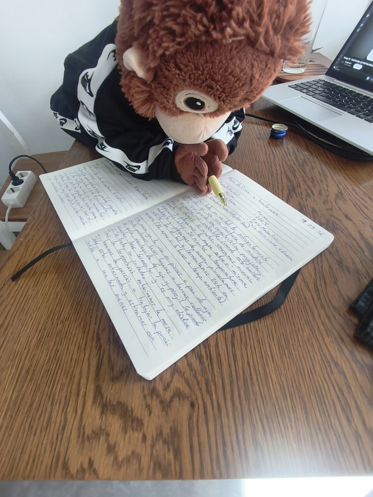

No te engañes, ya no eres joven, pero de ti depende perder la juventud de tu interior. ¿Qué es un Kolo-Kolo?
Un Kolo-kolo es
la moneda de curso legal en los eventos monitos los Kolo-kolo deben ser hechos a mano, a lo sumo impresos. Se clasifican en monedas
y billetes pero sólo existe la moneda de 1 Kolo-kolo y billetes en potencias de 2 así, existen los billetes de 2, 4, 8, 16 y 32 Kolo-kolos
IMPORTANTE: No se permiten Kolo-kolos con insultos, vejaciones, dibujos de mal gusto o que puedan incomodar a alguien. Un
billete de Kolo-kolo debe ser siempre de un tamaño superior a una tarjeta de crédito y cuantos más colores tenga el Kolo-kolo mejor, más
divertido y guay será pero aquí no se juzga a nadie y puedes hacer los Kolo-kolos como tú quieras ya que es una forma bonita de expresarte.
